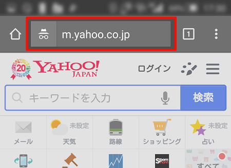
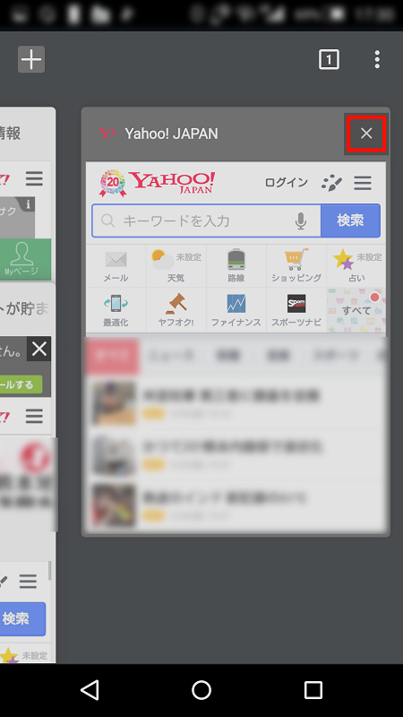
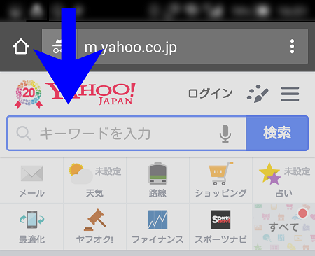
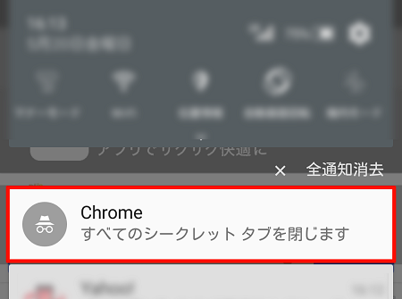
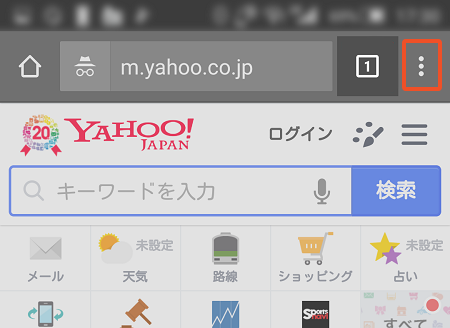
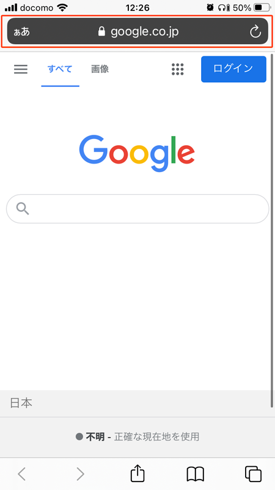
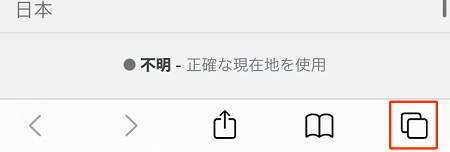
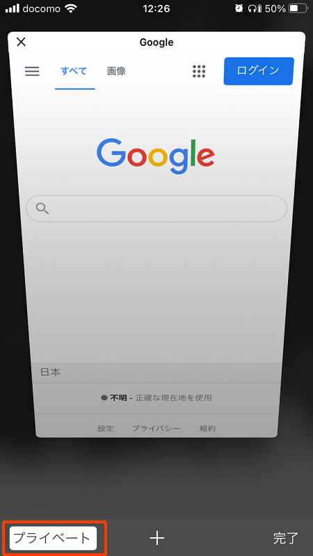
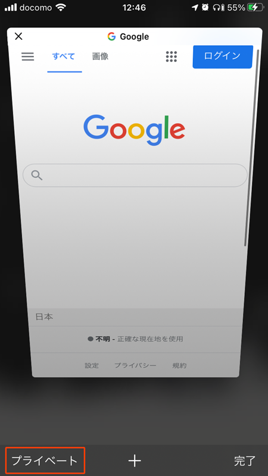
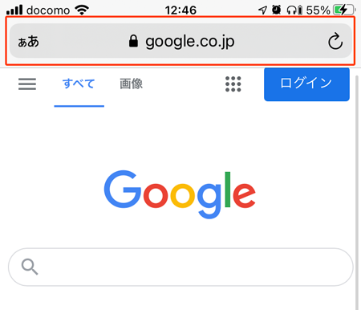

スマホ アンドロイド(Google Chrome)の方
アンドロイド(Google Chrome)の方は「シークレットモード」の解除が必要です。
手順１ シークレットモードのオン/オフを確認します。オンの場合、Chromeのページ上部分が黒く表示され、シークレットモードのマークが表示されます。

手順２ ページ右下の数字を選択し、タブ一覧を表示させます。
手順３ シークレットモードを終了したいブラウザタブを「×」ボタンで閉じます。

手順４ Android5.0以降の場合、画面上部を指で下にスワイプします。

手順５ 「すべてのシークレットタブを閉じます」を選択すると、すべてのシークレットタブが終了します。

手順６ 新しいタブを追加する場合、URLウインドウ横の「メニュー」を選択し、通常のブラウザを利用したい場合には「新しいタブ」を選択し新しいタブを表示させます。

iPhone(Safari)の方
iPhone(Safari)の方は「プライベートモード」の解除が必要です。
手順１ プライベートモードがオンになっているか確認します。オンの場合上部が黒く表示されます。

手順２ ページ右下のアイコンをタップします。

手順３ ページ左下の「プライベート」をタップします。

手順４ 「ブライベート」ボタンが黒く表示され、ページ上部も白く表示されていますので設定完了です。

